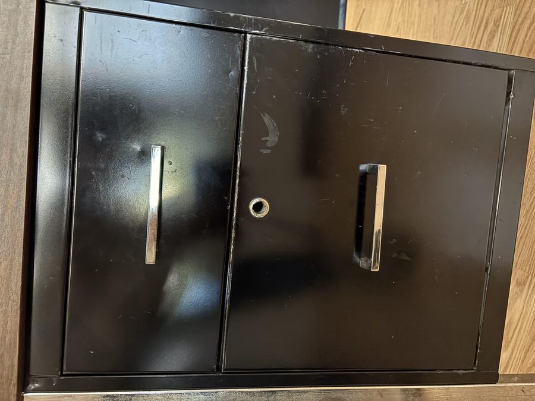

🚨 Need to Know — the Safety Wire
Flood Advisories in effect at evening press time — all expire by 7:00 PM, and the main rain band has moved out. NWS San Francisco updated the Bay Area Flood Advisory at 5:01 PM PT, in effect until 6:30 PM PT, naming San Jose, Oakland, Fremont, Hayward, Sunnyvale, Santa Clara, Milpitas and Palo Alto among the places that will experience flooding: urban and small-stream flooding continues, with 1 to 2.5 inches fallen in that advisory area, and the update reports the main rain band has moved out with scattered showers continuing — nuisance flooding is expected to trend downwards over the next few hours before the next round of rain arrives. The separate Santa Clara County advisory (3:44 PM PT) also runs until 6:30 PM PT, with 1 to 3 inches fallen across San Jose, Sunnyvale, Santa Clara, Milpitas, Cupertino, Gilroy, Campbell, Morgan Hill, Saratoga and Los Gatos. The advisory for southwestern Santa Clara County — Saratoga, Los Gatos and Palo Alto among its named places, and the advisory covering the Lenwood point — runs until 7:00 PM PT, with 2 to 5.5 inches fallen there and an additional 0.5 to 1 inch expected. Impacts remain minor flooding in low-lying and poor-drainage areas and water over roadways. Turn around, don’t drown when encountering flooded roads; do not drive on flooded roads. Sources: NWS — active alerts for the Lenwood point · NWS — active alerts for Santa Clara County
The Wind Advisory has expired. The advisory for the Santa Clara Valley including San Jose — south winds 20 to 30 mph gusting to 55 mph — ended at 4:00 PM PT as scheduled and is no longer in the active-alerts feed at the evening check. Tonight’s point forecast carries only gusts to about 18 mph with the returning rain. Source: NWS — active alerts for the Santa Clara Valley (CAZ513)
Bayshore: the Coastal Flood Advisory was reissued this afternoon, still to Friday morning. Reissued by NWS San Francisco at 4:56 PM PT, the advisory for bayshore locations along San Francisco and San Pablo Bays runs until 10:00 AM Friday, with up to 1.2 feet of inundation above ground level possible in low-lying areas near shorelines and tidal waterways, including the county’s bayshore at Alviso. High tide at the San Francisco gauge is expected at 7.0 feet (1.2 feet above normal) at 7:15 AM Thursday and 6.9 feet at 7:45 AM Friday, including up to 1.8 feet of surge. Allow extra time where bayshore roads flood; do not drive around barricades or through water of unknown depth. Source: NWS — active alerts for the San Francisco Bay Shoreline (CAZ508)
County picture: no current disasters, and no county alert beyond the NWS advisories. The Santa Clara County Office of Emergency Management’s current-alerts page, checked this evening, states there are no current disasters; AlertSCC carries no separate county evacuation or flood emergency for the valley. The city’s El Niño local emergency, proclaimed Nov 10, remains the standing readiness posture. Source: County OEM — current alerts and disasters
No banner-grade valley freeway closure was verified at evening press time. No full closure on 87, 101, 280, 680, 880, or 85 in the valley was verified at the evening check of CHP Golden Gate incidents and Bay Area highway status. The day’s verified flooding closures were outside the valley — westbound I-580 in the Richmond area and I-280 in San Francisco near Geneva Avenue among them — Peninsula and East Bay context, not a valley closure. The evening hazards here are ponding and water over roadways until the Flood Advisories expire at 6:30 / 7:00 PM, and the next round of rain tonight. Sources: CHP — Golden Gate communications center incidents · KION — storm system pounds Bay Area, Nov 18
Transit: free VTA rides to warming centers through Friday, and the standing Snell notice continues. VTA is offering free bus and light rail fares to riders traveling to or from Santa Clara County warming centers from Wednesday Nov 18 through Friday Nov 20, due to the inclement weather — tell the driver; no proof is required. Separately, VTA’s Snell Station Elevator B (platform) remains out of service since Nov 13 for a technical problem, until further notice — South San Jose riders who need the elevator should plan around Snell. No storm-related VTA service suspension was verified at the evening check. Sources: VTA — free bus and light rail service to warming centers, Nov 18–20 · VTA — Snell Station Elevator B out of service
Storm readiness, standing. Valley Water offers free filled sandbags for county residents at its five sites (Nov 1–Apr 15 season); no Valley Water flood notice was found at the evening check. Report creek debris to Valley Water at (408) 630-2378. Crews are watching the creek hot spots — Coyote, Guadalupe, Canoas, Ross, Upper Penitencia, Berryessa, and Lower Silver creeks — under the city’s El Niño emergency and its $5.5 million Emergency Reserve Fund. Sources: San José Spotlight — San Jose declares El Niño emergency, Nov 13
🌦️ Weather Events — the sky as news
Closing out Wednesday’s storm — the main band is out, the advisories expire this evening, and one more round arrives tonight. Final state at evening press time: light rain and fog/mist at San Jose airport at 5:01 PM, about 55°F, with the afternoon Flood Advisories still in effect until 6:30 PM (county and Bay Area) and 7:00 PM (southwestern county, covering the Lenwood point) and the Wind Advisory expired at 4:00 PM. What fell: 1 to 3 inches across the county advisory area (San Jose included), 1 to 2.5 inches in the 5:01 PM Bay Area update area, and 2 to 5.5 inches in the southwestern county hills around Saratoga and Los Gatos — the day’s heaviest totals. What cleared: the main rain band has moved out, per the 5:01 PM NWS update, with scattered showers continuing and nuisance flooding expected to trend downwards over the next few hours; this evening’s point forecast eases to a chance of light rain (50%, a tenth to a quarter of an inch possible). Tonight — the second round: rain likely before 1:00 AM, then showers and thunderstorms, low near 49°F rising to about 51°F overnight, gusts to about 18 mph, chance 100%, another 1 to 2 inches possible, under the bayshore Coastal Flood Advisory at Thursday’s 7:15 AM high tide. Thursday: showers and thunderstorms before 10:00 AM, then rain (90%), high near 56°F falling to about 52°F, gusts to 25 mph, a further half to three-quarters of an inch possible, tapering Thursday night to rain likely before 2:00 AM (60%). Friday turns mostly sunny near 58°F — the dry pick of the late week — before Saturday brings a chance of rain after 4:00 PM near 58°F and rain likely Saturday night.
Today in the Valley — Wednesday, November 18
Still ahead tonight downtown — two rock headliners, an hour apart, just after the advisories expire. Three Days Grace brings the Alienation Tour to SAP Center at 7:00 PM, with I Prevail and The Funeral Portrait. Alice Cooper brings Alice’s Attic Tour to the San Jose Civic at 8:00 PM. Both were still listed at the evening check, with no cancellation or postponement found — allow extra travel time for ponding on the way in. Sources: AXS — Three Days Grace, SAP Center, Wed Nov 18, 7:00 PM · AXS — Alice Cooper, San Jose Civic, Wed Nov 18, 8:00 PM
Theatre tonight: a whodunit opens in previews, a rock opera continues. Clue begins previews at San Jose Stage tonight, running Nov 18–Dec 20 (press opening Nov 21; Wed–Thu performances at 7:00 PM per the company). The Who’s Tommy continues at the Center for the Performing Arts through Sunday Nov 22. Sources: San Jose Stage — Clue, Nov 18–Dec 20 · Broadway San Jose — The Who’s Tommy, Nov 17–22
At The Tech this evening: the Hunger Games IMAX run began at 6:00 PM. The Hunger Games: Sunrise on the Reaping opened in The Tech Interactive’s IMAX Dome today, listed at 6:00 PM. The Tech and Children’s Discovery Museum ran their regular Wednesday schedules today — the museums’ day is done at evening press time. Source: The Tech Interactive — upcoming events
The library’s evening tail is still ahead — South San Jose first. Edenvale hosts ESL Classes with Evergreen Valley College (ESL 502) this evening 5:15–6:45 PM; Village Square hosts Bollywood Dance at 5:30 PM; West Valley’s Gratitude Tree runs to 7:00 PM. Earlier today, two listings were marked canceled in the library’s own calendar: the virtual Tech Time Assistance for Active Adults (55+) and Edenvale’s 1:1 Tech Mentor (2:00–4:00 PM). Source: San José Public Library — events, Nov 18
After dark: the holiday lights are on — in the rain. San Jose Holiday Lights runs tonight 4:30–10:30 PM at Discovery Meadow in Guadalupe River Park, nightly through Jan 1 — a walk-through, so dress for rain and check the listing before heading out. Sonic Runway at City Hall runs 5:00 PM to midnight, free. Source: San Jose Holiday Lights — Discovery Meadow, nightly
Overhead tonight: a waxing Moon past first quarter, behind the storm. The Moon is about 59–60% lit tonight, but clouds and the returning rain rule the valley sky. See the Star Chart in the sidebar for the honest odds.
The Week Ahead
Tomorrow, Thu Nov 19 — still wet: showers and thunderstorms (90%), near 56°F. Rain before 10:00 AM gives way to rain through the day, another half to three-quarters of an inch possible, gusts to 25 mph, tapering Thursday night to rain likely before 2:00 AM (60%), low near 44°F. The bayshore Coastal Flood Advisory is in effect at Thursday’s 7:15 AM high tide (7.0 feet at the San Francisco gauge). Downtown: The Who’s Tommy continues at the Center for the Performing Arts at 7:30 PM and Clue continues in previews at San Jose Stage; no SAP Center event is listed for Thursday — the arena’s next listing is Friday’s Who Want The Smoke. The library’s Thursday slate runs from morning storytimes to afternoon clubs (Seven Trees Mahjong Club 10:00 AM–noon and Calabazas Junior STEAM Club 3:30 PM among them). VTA’s free rides to and from county warming centers continue through Friday. Sources: San José Public Library — events, Nov 19 · Ticketmaster — SAP Center listings
Today, Wed Nov 18 — closed out. The week’s main rain peaked this afternoon under Flood Advisories (expiring 6:30 / 7:00 PM this evening) and a Wind Advisory (expired 4:00 PM); tonight brings rain likely, then showers and thunderstorms (100%, another 1 to 2 inches possible). Tonight: Three Days Grace at SAP Center 7:00 PM, Alice Cooper at the Civic 8:00 PM, Clue previews open, Tommy continues, Hunger Games IMAX began, and the Morgan Hill Car Meet runs just after the advisories expire — check its listing. See Today in the Valley.
Fri Nov 20 — the dry pick of the late week. Mostly sunny near 58°F, after the bayshore Coastal Flood Advisory ends at 10:00 AM. Who Want The Smoke plays SAP Center at 7:00 PM, and Opera San Jose’s Fiddler on the Roof plays the California Theatre at 7:30 PM. Sources: Ticketmaster — SAP Center listings
Sat–Sun, Nov 21–22 — rain returns late Saturday. Saturday is partly sunny near 58°F with a chance of rain after 4:00 PM and rain likely Saturday night: the Sharks host Seattle at SAP Center at 7:00 PM and Arcángel plays the San Jose Civic at 8:00 PM, with the morning car meets still ahead of the rain (see Car Shows). Sunday carries rain likely near 55°F: Fiddler on the Roof plays a 2:00 PM matinee and Tommy closes. San Jose Holiday Lights runs nightly all week at Discovery Meadow, 4:30–10:30 PM.
Next week glance — Mon–Tue, Nov 23–24. Monday is mostly sunny near 58°F, with a chance of rain Monday night; Tuesday turns to rain near 58°F. Full Moon is Nov 24.
🏁 Car Shows — the Bay Area circuit
Sat Nov 21 — Cars & Coffee San Jose — Free Coffee & Donuts · California’s Finest Detail Supply, 1847 Little Orchard Street, San Jose · 8:00–11:00 AM, monthly (3rd Saturday). Cars, trucks, motorcycles, and custom rides welcome. Forecast watch: Saturday morning looks dry in the midday NWS outlook, with a chance of rain only after 4:00 PM — still check the listing before heading out.
Sat Nov 21 — Neue Klasse & Kaffee · Loma Brewing Company, 130 N Santa Cruz Ave, Los Gatos (Parking Lot 3 behind Loma Coffee Bar) · 8:00–11:00 AM. BMW Neue Klasse and other vintage cars in the spotlight; all fun cars and spectators invited, coffee and doughnuts provided.
Sat Nov 21 — Volkswagen Poker Run · Peninsula Automotive, 861 Camden Avenue, Campbell · check-in 8:00 AM, driver meeting 9:00 AM, run starts 9:30 AM. All Volkswagens welcome; $20 to enter, bring canned goods; five-card stops with prizes for the best hand.
Sat Nov 21, evening — Los Gatos cruises · The Classic Burgers Cruise gathers at 15737 Los Gatos Boulevard at 5:00 PM, and the year-round Saturday Night Cruise departs McDonald’s / Erik’s Deli, 15475 Los Gatos Boulevard, by 6:30 PM, rolling through Los Gatos, Campbell, and Santana Row. All cars welcome, no membership required.
Sun Nov 22 — Golden Gate Region Porsche Club Cars & Coffee · Ariana Auto Body, 8145 Enterprise Drive, Newark · 10:00 AM – noon. A club gathering — contact the club for participation details before attending.
Wed Nov 18 — Morgan Hill Car Meet · 15700 Monterey Road, Morgan Hill · 7:30 PM. South County’s standing Wednesday meet-up — tonight it sits just after the Flood Advisories expire (6:30 / 7:00 PM), with scattered showers continuing and the next round of rain arriving later tonight, so check the listing before heading out.
Thu Nov 19 — two evening cruises, weather permitting. The San Jose Thursday cruise at Mojo’s Hamburgers, 1401 Foxworthy Ave, starts 3:00 PM; the Better Late Than Never VW cruise gathers at the Harbor Freight lot, 5229 Stevens Creek Blvd, Santa Clara, at 7:30 PM. Thursday is still rated 90% for showers and thunderstorms — verify before you roll. Source: California Cars & Kulture — upcoming events
Sun Dec 13 — Cars & Croissants on The Row · Santana Row, San Jose · 9:00 AM – noon. 100|OCT’s premier exotic gathering runs on Sundays in its 2026 season — the next (and last of the year) is Dec 13. Free to attend; displaying an exotic requires a reserved spot.
Sat Nov 28 — Holiday Toy Drive · Gateway Hall, Santa Clara County Fairgrounds, 344 Tully Rd, San Jose · 7:00 AM–6:00 PM. Viejitos Car Club Silicon Valley and BLVD Kings Car Club San Jose host: bring new, unwrapped toys (drop-off in Lot C); all car clubs and solo riders welcome, with pictures with Santa, raffles, and live entertainment. The South Bay headline of Thanksgiving weekend. Source: Santa Clara County Fairgrounds — the venue’s own events page.
Worth the drive — Sat Nov 28: Cars and Coffee at Laguna Seca · WeatherTech Raceway Laguna Seca, Salinas · Saturday morning per the calendar listing — verify the morning’s hours against the listing before the drive south.
Thanksgiving week is thin, honestly. Beyond the Sat Nov 28 pair, no verified Bay Area show or cruise was found for Thu Nov 26 through Tue Dec 1 on the calendars swept — the holiday week is quiet on the circuit.
Sat Nov 21 — San Rafael Cars & Coffee, Marin County Civic Center, 3530 Civic Center Drive, 8:00–10:00 AM, monthly, listed rain or shine — check with the organizer for rain changes.
Sat Nov 21 — Sonoma Cars & Coffee, 19355 Arnold Drive, Sonoma, 8:00–10:00 AM, monthly.
Sun Nov 22 — Novato Cars & Coffee, Vintage Oaks Shopping Center, 132 Vintage Way, Novato, 8:00–10:00 AM, monthly, hosted by the PCA Redwood Region. Lafayette (8:00–10:00 AM) and Moraga (10:00 AM–noon) cars & coffee also run Sunday — both listings note rain cancels.
The Community Wire
No new pertinent post from an official or public Facebook page was verified at evening press time — the wire is honest when it is empty. Summaries here are always in our own words, attributed, and linked to the original. No private groups unless the publisher names them.
🎁 Free Stuff
FREE — vintage steel tanker desk. A classic mid-century tanker, built like its name: a heavy steel double pedestal with five drawers — a shallow drawer over a deep locking file drawer on the left, three drawers on the right — chrome pulls and legs, and a dark woodgrain laminate top. It measures 60″ long × 30″ deep × 30″ high. Used and solid; the top is dusty with light scuffs from storage, and the items sitting on it in the office photo aren’t included. Fair warning: it’s heavy — bring help and a dolly.



First confirmed pickup takes it. Pickup at 18231 Llagas Creek Dr, Morgan Hill — arrange a time through the Facebook Marketplace listing. Running at the publisher’s direction; the same desk is also offered in our sister papers.